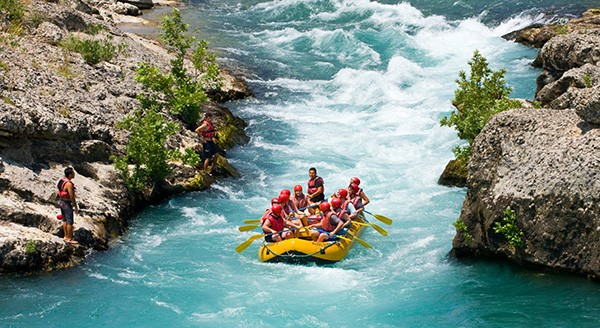

Rafting Adventure
This paragraph contains a lot of lines in the source code, but the browser ignores it.

This paragraph contains a lot of lines in the source code, but the browser ignores it.
In the rapids, we were only mildly splashed, and on the wonderful water sections we sat on a large cooler, feet dangling. In a stark landscape of chimneys and mesas, we stared at a deep blue sky straight out of Western cliché, as Mr. Raft steered and the river whisked us along. There were no riverside trails or roads to bring any intruders into our own personal wilderness. A few cows, owned by Navajo ranchers, idled by the river, and variety of birds. Herons, hawks, migrating birds and Canadian geese flew overhead, between cottonwoods and among the yellow and chartreuse reeds. These are the most beautiful moments you can enjoy in the west.